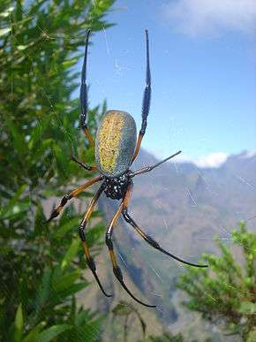

Nephila Inaurata


Plus connue sous le nom de Néphile dorée , est une espèce d’araignées Aranéomorphes, c’est l’une des espèces endémiques de Madagascar.
Elle se caractérise par ses longues pattes orangées et sa forme allongée et son abdomen doré ou noir ; les mâles mesurent environ dans les 5cm tandis que les femelle d’une taille depassant celle des mâles, mesurent environ dans les 10cm.
D’après les recherches scientifiques, malgré sa taille, cette espèce est inoffensive et passive…